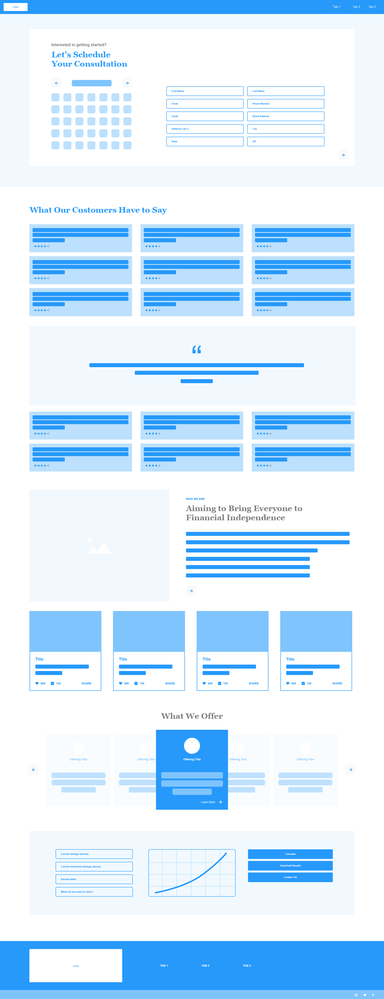
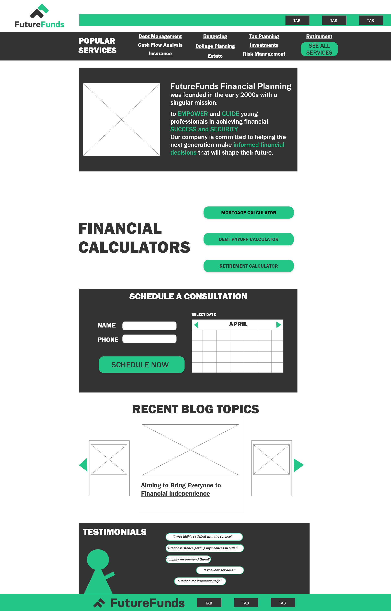
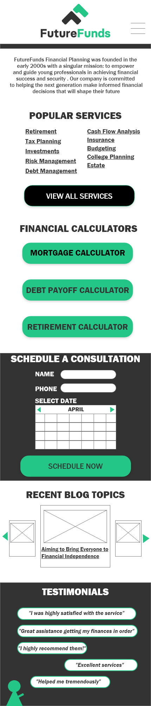

Popular services
Important financial services are grouped near the beginning of the page so visitors can quickly understand what FutureFunds offers.
Responsive UX/UI Case Study
A responsive financial-planning website designed to help young professionals discover services, use financial calculators, and schedule consultations.
Overview
FutureFunds is a responsive website concept for a financial-planning company serving young professionals. The experience introduces the organization, organizes its services, provides access to financial calculators, and gives visitors a clear way to schedule a consultation.
The project required both desktop and mobile layouts. The content and navigation needed to adapt to different screen sizes without losing important information or functionality.
The challenge
Financial websites can feel complicated or intimidating, especially for younger users who may be learning about budgeting, retirement, debt management and investing.
The page needed to communicate a large amount of information while keeping important actions easy to locate.
Project goals
Early exploration
The early wireframe explored consultation scheduling, customer testimonials, company information, service offerings, calculators and supporting content. Reviewing this layout revealed that the page needed a clearer hierarchy and a more focused landing-page experience.

The solution
Important financial services are grouped near the beginning of the page so visitors can quickly understand what FutureFunds offers.
Mortgage, debt-payoff and retirement calculators are presented as clear actions instead of being hidden within lengthy content.
A dedicated scheduling section combines contact fields, date selection and one prominent call-to-action.
Blog topics and testimonials support the primary services while helping the organization establish credibility.
Responsive designs
The desktop version uses horizontal space to organize content into columns. The mobile version changes those sections into a vertical sequence with larger touch targets and simplified navigation.


Design decisions
On smaller screens, services, calculators and scheduling controls are stacked in a logical reading order. Large buttons provide comfortable touch targets, while section headings help users scan the page.
Accessibility
Outcome
The finished concept transformed a broad initial wireframe into a more focused responsive landing page. Visitors can identify services, select a calculator, schedule a consultation and review supporting content without navigating through an overwhelming interface.
The project demonstrates responsive UX/UI design, information organization, accessibility planning and the ability to revise a design after reviewing usability concerns.